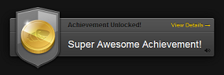
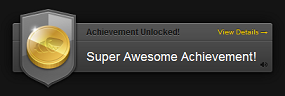

Kevin Oluibiyi's Profile
Summary
I am a skilled Full Stack Developer with a BBA in Digital Marketing and AI from Nexford University and a Full Stack Development Certificate from Appbrewery London. My expertise spans web development, social media strategy, and AI, with additional certifications in global management and cross-cultural communication. I combine technical proficiency with business insights to deliver innovative, user-focused solutions.
Education
Full Stack Development Certificate
- Appbrewery London | 2024Bachelor of Business Administration with Specialization in Digital Marketing and Artificial Inteligence
- Nexford University | 2022 - 2024Associate of Applied Science in Business
- Nexford University | 2022 - 2024Business Essentials Cerificate
- Nexford University | 2022 - 2024Statistics Foundation 1: The Basics
- National Association of State Boards of Accountancy / LinkedIn Learning | 2023Certificate in Communicating Across Culture
- Project Management Institute / LinkedIn Learning | 2022Certificate in Managing Globally
- Project Management Institute / LinkedIn Learning | 2022Introduction to Social Media Strategy
- LinkedIn Learning | 2022Building a Website Certficate
- Alison Certification | 2012Diploma in Social Media Marketing
- Alison Certification | 2012
Work Experience
Founder & Lead Full Stack Developer
I.Q. WORLD INTERNATIONAL ABUJA NIGERIA | Jan 2021 – Present
Key Responsibilities:
- Designed and developed responsive web applications using technologies like React, Node.js, and MongoDB.
- Led end-to-end digital marketing campaigns, focusing on SEO, social media marketing, and email automation to boost client brand visibility.
- Created and optimized engaging content for websites, blogs, and social media channels to drive traffic and increase conversions.
- Provided ongoing technical support, website maintenance, and feature updates to ensure consistent performance and user satisfaction.
Digital Marketing Strategist & Web Designer
I.Q. WORLD INTERNATIONAL ABUJA NIGERIA | Jan 2015 – Dec 2020
Key Responsibilities:
- Developed and managed digital marketing campaigns, including SEO, PPC, and content marketing, to drive lead generation and brand growth.
- Designed visually appealing, responsive websites tailored to client needs using HTML, CSS, and WordPress.
- Conducted market research to identify trends and customer needs, ensuring marketing efforts were aligned with business objectives.
- Tracked and analyzed web performance metrics to optimize site traffic and improve user experience.
Content Creator & Web Developer
I.Q. WORLD INTERNATIONAL ABUJA NIGERIA | Jan 2009 – Dec 2014
Key Responsibilities:
- Created and managed content for websites, blogs, and social media platforms, focusing on increasing engagement and brand awareness.
- Built and maintained websites using HTML, CSS, and JavaScript, ensuring they were functional, fast, and user-friendly.
- Collaborated with clients to understand their vision, translating it into compelling digital content and attractive, easy-to-navigate websites.
Internet Marketing Manager / Computer Instructor
ABIMCO COMMUNICATION S & INTERNET SERVICES LTD, ABUJA NIGERIA | Jan 2008 - Jan 2009
Key Responsibilities:
- Developed and Managed Digital Marketing Campaigns
- Designed and Maintained Website Infrastructure
- Provided Technical Training and Mentorship
- Analyzed and Reported on Web Performance Metrics
- Collaborated with Cross-Functional Teams
IT Assistant/Computer Operator
HANCOCK OGUNDIYA & PARTNERS, LAGOS NIGERIA | Feb 2002 - Nov 2006
Key Responsibilities:
- Monitored Operational Activities and Effectiveness of All Computers
- Assisted in Troubleshooting and Resolving IT Hardware/Software Issues
- Traveled with Engineers to Assist in Uploading and Plotting Survey Data
- Monitored and Managed Company Website and Staff Email Allocations
- Provided Technical Support for Daily IT Operations
- Performed System Backups and Data Recovery Procedures
- Ensured Network Security and Regular System Updates
- Assisted in Installing and Configuring New Computer Systems and Software
- Maintained IT Inventory and Equipment Logs
- Collaborated with IT Team for Infrastructure Maintenance and Upgrades
Skills
Web Development & Programming
- Full Stack Development (HTML, CSS, JavaScript, React, Node.js)
- Backend Development (Express.js, MongoDB, SQL)
- Responsive Web Design
- API Development and Integration
- API Development and Integration
- Cross-Browser Compatibility
- UI/UX Design Principles
Digital Marketing & SEO
- SEO Optimization & Analytics (Google Analytics, SEMrush)
- Social Media Strategy (Facebook, Instagram, LinkedIn, Twitter)
- Pay-Per-Click (PPC) Advertising (Google Ads, Facebook Ads)
- Content Marketing & Blogging
- Email Marketing & Automation
- Digital Campaign Management
- Brand Strategy Development
Content Creation
- Web Content Writing
- Video Production & Editing
- Graphic Design (Canva, Adobe Photoshop)
- Social Media Content Creation
- Copywriting & Storytelling
Blockchain & AI
- Blockchain Technology & Smart Contracts
- Cryptocurrency Development & Consulting
- AI Integration & Machine Learning
- AI Chatbots & Automation Tools
Business & Project Management
- Business Strategy & Market Research
- Cross-Cultural Communication
- Project Management Tools (Trello, Asana)
- Client Consultation & Requirement Analysis
- Agile Development & Scrum
Awards, Certifications, and Achievements
- Full Stack Development Certificate – Appbrewery London
- Bachelor of Business Administration (BBA) with Specialization in Digital Marketing and AI – Nexford University
- Associate of Applied Science in Business – Nexford University
- Business Essentials Certificate – Nexford University
- Statistics Foundation 1: The Basics – National Association of State Boards of Accountancy / LinkedIn Learning
- Certificate in Communicating Across Cultures – Project Management Institute / LinkedIn Learning
- Certificate in Managing Globally – Project Management Institute / LinkedIn Learning
- Introduction to Social Media Strategy – LinkedIn Learning
- Diploma in Social Media Marketing – Alison Certification
- Building a Website Certificate – Alison Certification
 
